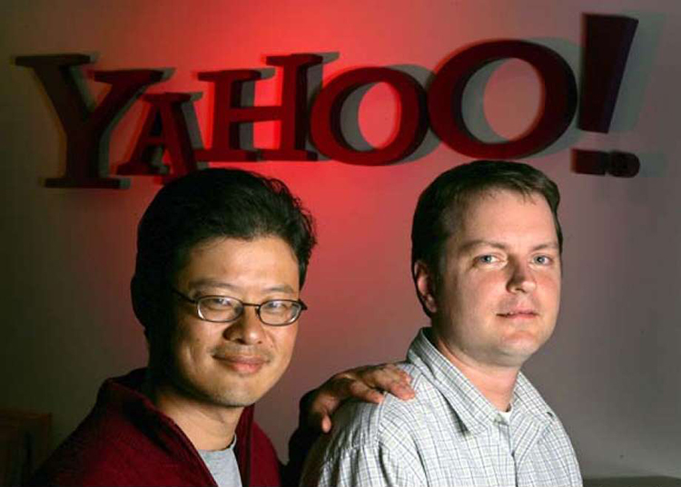

İlk başlarda arama motoru olarak hizmet vermesine rağmen zamanla e-posta, anında iletileşme, e-posta grubu ve benzeri hizmetler de sunarak pazarda hâkim olmaya çalışmıştır. Yahoo! hizmetlerinin ulaşılabildiği Yahoo.com, günde 7 milyar sayfa gösterimiyle dünyanın en çok ziyaret edilen 5. sitesidir. Sunduğu hizmetlerden Yahoo Messenger özellikle ABD'de çok yaygın olarak kullanılmaktadır.
4 Şubat 2008 tarihinde Microsoft, Yahoo! Inc. için 44.6 milyar dolarlık bir teklif yapmış, Yahoo! ise bu teklifi reddetmiştir.
1994 yılının Ocak ayında Jerry Yang ve David Filo adlı Stanford Üniversitesi elektrik mühendisliği yüksek lisans öğrencileri “world wide web Jerry kılavuzu” adlı bir web sitesi oluşturdular. David ve Jerry’nin World Wide Web Kılavuzu, Başlangıçta , Yahoo bir hiyerarşi içinde diğer web siteleri organize bir dizin oldu. Ancak gelişmeye ve farklılaşmaya başladı ve 1994 yılı Nisan ayında, “World Wide Web, David ve Jerry Kılavuzu”, “Yahoo!” adını aldı.
Yahoo.com 18 Ocak 1995 tarihinde kuruldu.
“Yahoo” kelimesi “Yet Another Hierarchical Officious Oracle” ın kısaltması olarak ortaya çıktı.
Yahoo! 1990’lı yıllarda hızla büyüdü. İlk başlarda arama motoru olarak hizmet vermesine rağmen zamanla e-posta, anında iletileşme, e-posta grubu ve benzeri hizmetler de sunarak pazarda hâkim olmaya çalışmıştır.
Yahoo! Movie ve Yahoo! Music şu anda dünyanın en büyük belgeliğini ve altyapısını oluşturmaktadır. Söylenenlere göre Yahoo! Music dünyada tüm müzik sektörüne tek başına karşı koyabilecek güçtedir.
Bunların dışında Yahoo! Hotjobs bölümünden iş arama olanağıda sunmakta. Yahoo! Finans bölümünden pek çok borsa endeksi ve hisse senedi hakkında ayrıntılı bilgiler alınabilmektedir. Yahoo! News bölümünden dünyadaki gelişmeler takip edilebilmekte ve Yahoo! Games bölümünde ise oyunlar oynanabilmektedir. Yahoo! Music dahilinde sunulan Yahoo! LAUNCHcast Radio ise ilk içerikli çevrimiçi radyo olma özelliğine sahiptir. Kullanıcılar parçalara oy vererek kendi zevklerine göre kanal oluşturabilmekte ve bunu kaliteli bir sesle çevrim içi olarak dinleyebilmektedirler. 2008 son aylarında Türkçe olarak hizmete sunulmuştur.
Ocak 2009 yılında Carol Bartz, kurucu ortağı Jerry Yang’ın yerini aldı. daha sonra hızla CEO değişiklikleri yaşanmaya devanm etti. 2012 başlarında,Scott Thompson’ın yeni CEO olarak atanmasından sonra, yeni CEO’nun büyük işten çıkarmalar yapacağına dair söylentiler yayılmaya başladı. Ve bir Çok önemli işten çıkarma 2012 içinde gerçekleşmeye başladı. Ve en son 16 Temmuz 2012 tarihinde, eski Google yöneticisi, Marissa Mayer , Yahoo! CEO’su seçildi.